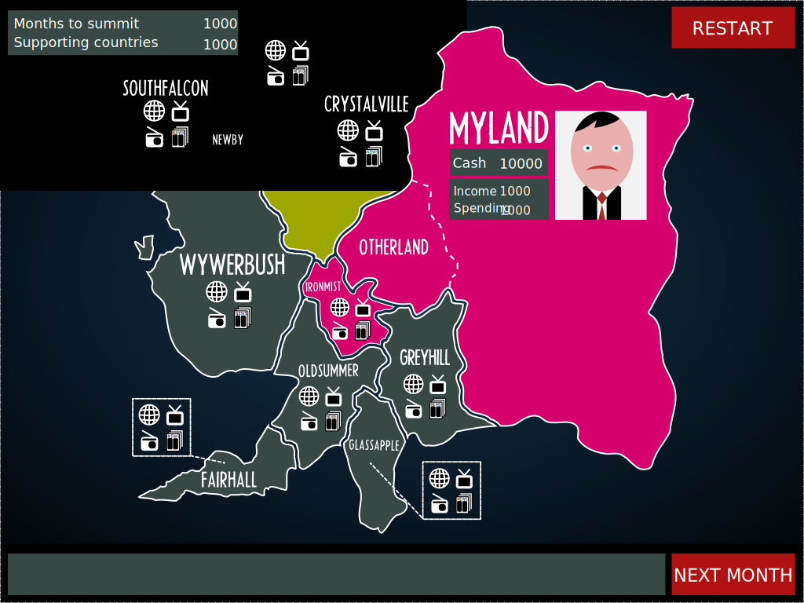

The Unconventional weapon
Turn based strategy
Use propaganda to tip the public opinion in majority of countries in favor of Myland. You have 10 turns / months to accomplish this. Click on a country to see how big is its population and what young and old people think of Myland. When you select a country, click icons to build/shutdown various "unbiased" media (Web, TV, Radio, Newspapers). Click on Myland to see details of your budget. Not tested in IE.
Hints:
- Your propaganda income increases over time.
- Web is the only media that affects young more than the old.
- Views on Myland spread across borders.
- Larger countries have larger influence on their neighbours.
- You can shutdown any medium to save money.
- Colour of countries reflect their attitude to Myland.